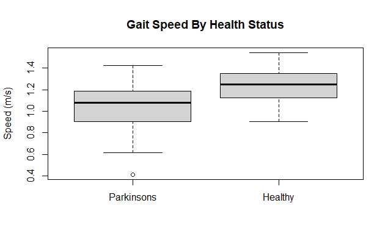

Projects
- CADENCE Study App
This is an app I created to help with data collection for my Cadence study. It has a semi customizable timer used to altert the team when different buttons needs to be pressed as well as a counter to calculate walking step rate based on different time intervals.
- CADENCE Study Processing
This is an app I created to complete the data processing necessary for the biomechanical outputs I receive from the Cadence study. You can upload any number of text output files from our MotionMonitor system and this script will segment the walking data into steps, filter said steps based on a few criteria (ie. not crossover stepping on the instrumented treadmill), and create an output sheet with peak and impulse values for each limb during each trial. If you're interested in testing out this script contact me and I can provide you with a few practice files that weren't involved in the study.
- Fair Market Housing App
This is likely the most useful application for the visitors to this website though is becoming outdated. This app allows you to explore the Fair Market Housing data for the 2024 fiscal year. Fair Market Rents are 40th percentile rents aggregated by the US Department of Housing and Urban Development. The primary functionality allows you to visualize these rent values for studio apartments up to 4 bedroom units within a set mile range from a zipcode. Additionally, you can complete a head to head comparison between two cities.
The projects in the below section are a mix of personal and academic projects that I have worked on over the years and have been of great use to me ranging from initial exploration of gait retraining, applications to find the best priced computer parts, and an analysis of the best submissions to learn in brazilian jiu jitsu.

Identification of Health Status via Gait Analysis
This project used ground reaction force data collected during walking for individuals with parkinsons disease and healthy controls.
I used R to load in data & isolate key points of the gait cycle to determine cadence for each foot through the entire trail.
I used feature engineering to measure & categorize all participants based on speed, variability, and asymmetry (difference between limbs). I visualized these differences, ran a principal component analysis and correlation analysis for feature reduction.
Finally, I created several logistic regression models to classify a test set as healthy or parkinsonian. I created several models beginning with speed as a single variable but settling on a stepwise logistic regression with moderate predictive power after doing diagnostics.
Online Computer Part Prices with Web Scraping
This project used the beautiful soup package in python to scrape price data from a list of predefined computer parts. This is the original version of the ebay app above, so try out the app, and more code is available on my github!
{kind=link}